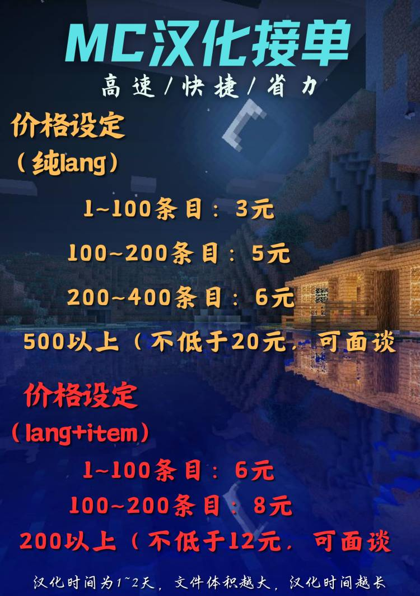

我在 Minecraft-苦力怕论坛 发过几个Addon的汉化作品，这是我的两个号的链接：
这两个账号里面都是我的汉化作品，其中「LineXics」不更新了，也就是说弃号了，「LineXic」还在活跃，这是我的接单介绍
另外我也可以搭建相关官网网站，比如服务器的文档，个人的博客等等，可以使用vue和vite框架搭建，现在你看到的站点就是我用vue框架搭建的
也可以搭建一些服务器博客，如typecho和halo等，这些酌情收费
承挨汉化组官网
及自己的个人主页就是我搭建并部署到GitHub上的，关于我的其他信息也可以在
LineXic博客-关于我
找到